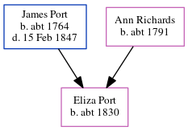

Emma Port c1787 - c1840
[ Home ] | [ Calendar ] | [ Surnames Index ] | [ Errors ] | [ Family History ]The child of James Port and Sarah Hoffman, Emma Port, the four times great-aunt of Nigel Horne, was born c. 1787 and baptised in Herne, Kent, England on 11 Nov 1787. She had 2 children, William and James.
She died c. May 1840 in Blean, Kent, England1 and was buried in Herne on 27 May 18402.
Parents
- James was born c. 1764
- Sarah was born in 1753
Children
- William was born c. 1804
- James was born c. 1809
Citations
- England & Wales deaths 1837-2007 - Findmypast
- England Deaths & Burials 1538-1991 - Findmypast
Media
Kent, Canterbury Archdeaconry Baptisms Image - GBPRS-CANT-005264849-00388
England Births & Baptisms 1538-1975 - R_884939499
England & Wales deaths 1837-2007 - BMD/D/1840/2/PZ/000036/012
England Deaths & Burials 1538-1991 - R_276369952
Family Tree
Map
Generated by ged2site. Last updated on Jul 3, 2024
Known Issues
Birth date (abt 1787) has no citations
Date of birth is known, but not place